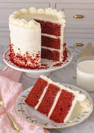

Vanila Cake

Vanilla cake is a classic and versatile dessert made from ingredients like flour, sugar, butter, eggs, and vanilla extract. It is a favorite in many cultures and can be enjoyed on its own or paired with various frostings and fillings.
Chocolate Cake

Chocolate cake is a rich and decadent dessert made from ingredients like cocoa powder, sugar, flour, and eggs. Found in many culinary traditions worldwide, it is particularly beloved in Western cuisine. This classic dessert can be made in various styles, from dense and fudgy to light and airy.
Red Velvet Cake
Red Velvet Cake is a luxurious dessert known for its striking red color and smooth, velvety texture. Made from ingredients like cocoa powder, buttermilk, vinegar, and a hint of vanilla, it is often complemented with a creamy, tangy cream cheese frosting. This popular cake is a staple in Southern cuisine and a favorite at celebrations and special occasions.
Strawberry Cake
Strawberry cake is a classic and refreshing dessert made from ingredients like strawberries, sugar, flour, and egg yolks. It is a favorite in many cultures and can be enjoyed on its own or paired with various fillings and toppings.
Black Forest Cake
Black Forest Cake is a rich and decadent dessert made from ingredients like cocoa powder, sugar, flour, and eggs. Found in many culinary traditions worldwide, it is particularly beloved in Western cuisine. This classic dessert can be made in various styles, from dense and fudgy to light and airy.